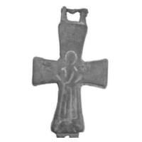

Catalog › CE-0507 · PES2020-F1-7
Valvă de encolpion, Viltina, рис. 1, 7
nedatat · Viltina, insula Saaremaa, Saaremaa, Estonia
single valve of a reliquary cross; nedatat; found at Viltina, insula Saaremaa, Saaremaa, Estonia.


Identificare
- Categorie
- Valvă izolată
- Tehnică
- Gravare (incizie); Niello
- Dimensiuni
- Î 43 × L 30 mm
Iconografie
- Revers
- Maica Domnului Orantă
- Descriere revers
- Maica Domnului Orantă; deasupra capului o cruce cu brațe egale trasată cu linii subțiri terminate în adâncituri punctiforme; gravura s-a șters, au rămas liniile adânci pentru niello. Balamale perechi, cu o bază slab marcată.
Datare și atribuire
- Datare
- nedatat
- Tipologie
- Korzuhina–Peskova 2003, grupa IV.5.5 (nestandard)
Descoperire
- Localitate
- Viltina, insula Saaremaa
- Regiune
- Saaremaa
- Țară
- Estonia
- Context
- Necropolă / mormânt
- Coordonate
- 58.3923° N, 23.0303° E
- Precizia locului
- Doar localitatea
Păstrare și referințe
- Nr. inventar
- AM 1036: 156
- Bibliografie
- А. А. Пескова, Древнейшие древнерусские нагрудные кресты-реликварии в свете новых исследований, în „Археологические вести”, 27, 2020, p. 175–193 [Пескова 2020], рис. 1, 7 (p. 178, legenda p. 179), tabelul 2, nr. 15 (p. 184). DOI 10.31600/1817-6976-2020-27-175-193. Publicată la: Корзухина, Пескова 2003, p. 169, tab. 100, IV.5.5/40; Jonuks, Kurisoo 2013, p. 73, fig. 1, 3.
- Figura
- рис. 1, 7
- Planșe
- Пескова 2020, p. 178
- Observații
- Din cimitirul cu incinerații în morminte de piatră de la Viltina, datat sec. XI–XII, cu înmormântări și din sec. XIII (Mägi 2002); valva nu provine dintr-un complex închis. Tabelul 2, nr. 15: dimensiuni 4,3 × 3,0 și 4,5 × 3,2 cm (după fotografie). Numărul „AM 1036: 156” e numărul de muzeu dat de autor; muzeul nu e numit. Autorul a socotit-o anterior în grupa IV.6.1/40. În text trimiterea la figură e „рис. 1, 8”, dar legenda dă Viltina la 1, 7. Datare: nu e dată în sursă. Coordonate: ale localității (aproximative), nu date în sursă.
Citare: Corpus Encolpiorum, CE-0507, Valvă de encolpion, Viltina, рис. 1, 7, https://vitaliejosanu1979-ux.github.io/primul-meu-proiect/piese/PES2020-F1-7/ (accesat 2026-10-17).